Módulos 0–2: Fundamentos y Fuentes de Campo
Coordenadas Cilíndricas y Versores Canónicos

Punto P(r, θ, z), versores r̂, θ̂, k̂ y relaciones algebraicas de producto cruz.
Producto Cruz y Regla de la Mano Derecha

Vectores A, B, ángulo θ y vector ortogonal C = A × B.
Campo Magnético de Cable Infinito y Circulación Azimutal
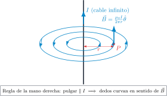
Líneas de campo concéntricas, vector B(r) = (μ₀I / 2πr)θ̂ y regla de la mano derecha.
Superposición: Arco Circular y Segmento Finito Paralelo a z
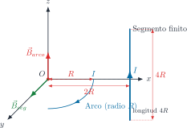
Arco de radio R en plano xy (4to cuadrante) y segmento rectilíneo de longitud 4R en x=2R.
Perfiles de Densidad de Corriente J(r)

Comparación de perfiles: Uniforme (J₀), Parabólico 2J₀(1 - r²/a²) y Escalonado (J₀ y 3J₀).
Efecto Pelicular Escalonado: Secciones r ≤ R/2 y R/2 < r ≤ R
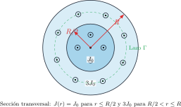
Cilindro con densidad escalonada J₀ y 3J₀, radios R/2 y R, corriente saliente ⊙.
Cable Coaxial Asimétrico (Radios R, 2R, 4R)
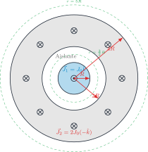
Núcleo interior J₁ = J₀k̂ (⊙), aislante intermedio y cascarón exterior J₂ = 2J₀(-k̂) (⊗).
Superposición Fuera de Eje: Cilindro Desplazado y Cable Infinito
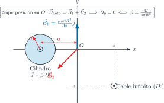
Cilindro macizo en (-a, 0) con J = βr' y cable infinito en (a, -a) con punto de observación en el origen O.
Densidad con Dependencia Angular J₁(θ) = α sin²θ k̂ y Cascarón

Cilindro interior R₁ con variación angular y cascarón exterior R₂ con densidad uniforme J₀(⊗).
Módulos 3–5: Ampère, Faraday y fem de Movimiento
Toroide Ideal Rectangular (Vista Superior y Corte Transversal rz)
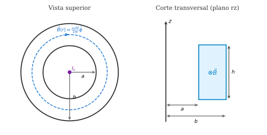
Radios a y b, altura h, N espiras, campo azimutal B y cable axial morado con corriente Ic.
Espira Rectangular Alejándose de Cable Recto Infinito
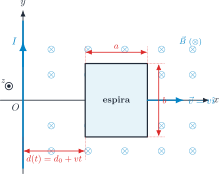
Cable infinito en eje y con corriente I, espira de lados a × b con velocidad v y distancia d(t).
Espira Cuadrada en Campo Magnético Rotatorio

Espira de lado a en plano xy y campo B con ángulo de elevación variable ϕ(t) = k + ωt.
Espira Circular con Espira Cuadrada Concéntrica en su Centro

Espira circular de radio R con corriente I(t) y pequeña espira cuadrada central de lado a << R.
Rectángulo Conductor en Campo Espacial y Temporal B(y,t) con ⊙
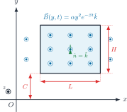
Campo B(y,t) = αy² e^(-βt) k̂ sobre rectángulo H × L con lado inferior ubicado en y = C.
Varilla Conductora en Rieles Verticales con Gravedad y Campo Entrante

Rieles verticales separados distancia L, varilla de masa m cayendo bajo gravedad g, campo B entrante ⊗.
Carrito Conductor Ingresando a Región con Campo Magnético Uniforme
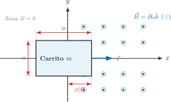
Carrito de masa m, ancho a, largo w y velocidad inicial v₀ ingresando a zona con B₀k̂ (⊙).
Módulos 6–8: Inductancia Mutua, Autoinductancia y Transientes
Solenoide Coaxial con Bobina Cuadrada Exterior

Solenoide ideal de radio a rodeado por bobina cuadrada coaxial de N espiras y lado L > 2a.
Dos Solenoides Concéntricos Ideales Muy Largos (R y 3R)
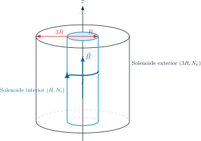
Bobina interior de radio R y Ni vueltas con corriente I(t), bobina exterior de radio 3R y Ne vueltas.
Alambre Infinito con Corriente Exponencial y Rectángulo Conductor

Cable sobre eje y con I(t) = I₀ e^(-t/τ) y espira rectangular de lados a × b a distancia a del cable.
Bobina Larga con Espira Inclinada en Ángulo α
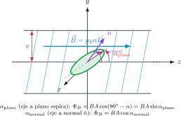
Solenoide de radio a y espira circular de radio b inclinada ángulo α entre eje longitudinal y plano de la espira.
Rollo Plano Circular con Pequeña Espira Concéntrica Central
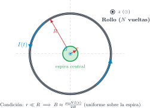
Rollo plano de N vueltas de radio R sobre una mesa con pequeña espira circular concéntrica de radio r << R.
Transformador Ideal con Núcleo Ferromagnético Cerrado

Núcleo ferromagnético toroidal cuadrado, devanado primario Np y devanado secundario Ns.
Circuito Transiente con Interruptor de 2 Posiciones (R, C, L, ε)
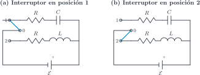
Fuente de fem ε, resistencia R, interruptor de 2 posiciones, rama superior con C y rama inferior con L y R.
Módulos 9–11: Oscilaciones RLC, Maxwell y Síntesis Final
Circuito RLC Serie Oscilante (Régimen Amortiguado)
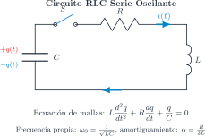
Circuito serie con inductor L, resistencia R, capacitor C, carga q(t) y corriente i(t).
Condensador Circular de Maxwell y Corriente de Desplazamiento
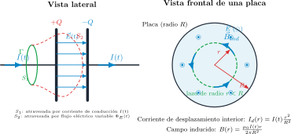
Vistas lateral y frontal: placas circulares radio R, lazo amperiano Γ, disco plano S₁ y bolsa interior S₂.